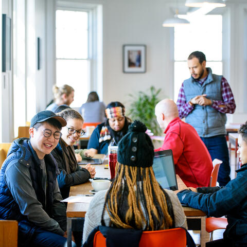
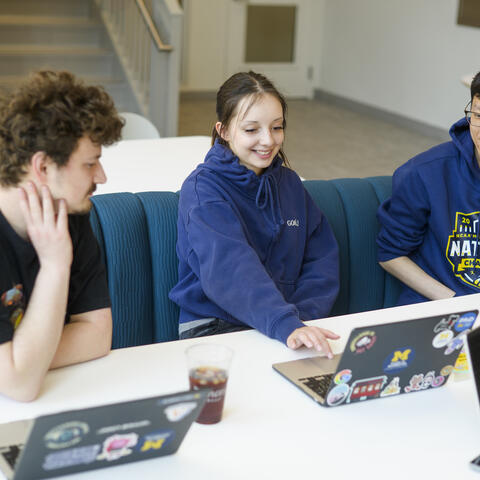
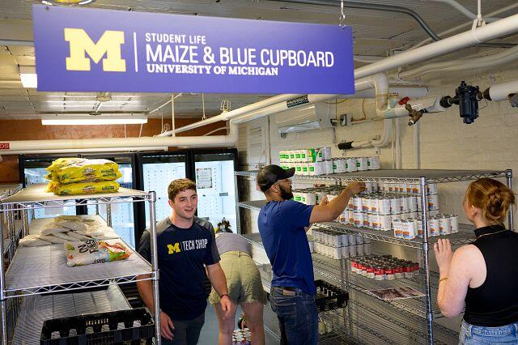
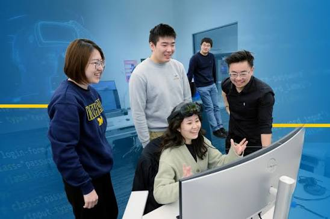
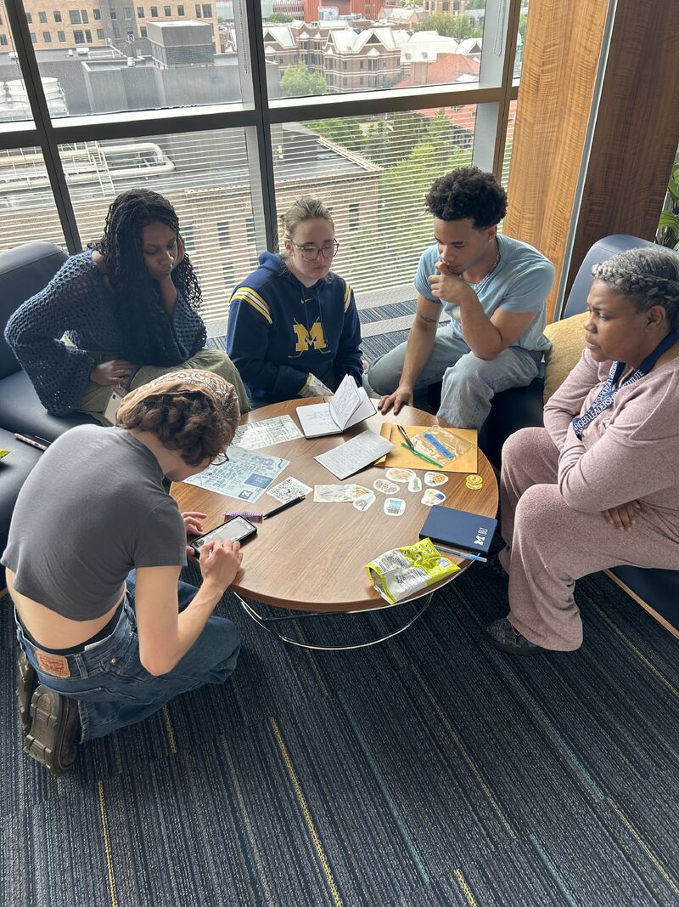
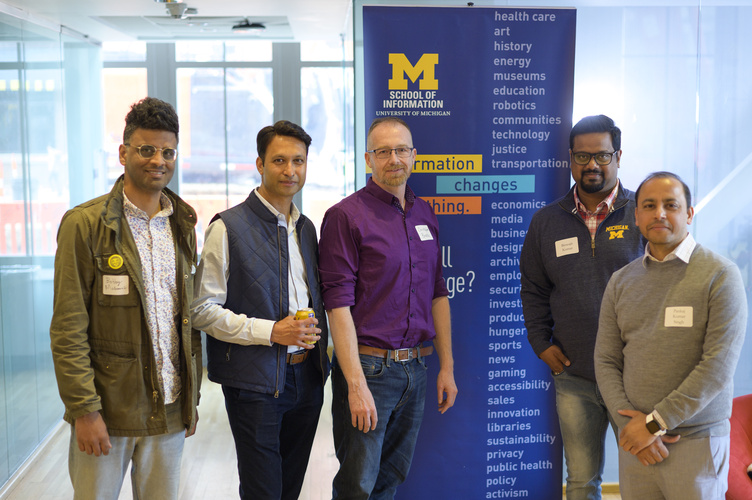

Your ELO is an opportunity to apply what you've learned while working with a project, organization, or community. As you work, stay organized, communicate with your project partners, and use feedback to adjust your approach.

Starting the Work with Your Partner
First impressions shape the trajectory of a partnership. Draft clear, professional outreach to launch the working relationship, and use your first meeting to define roles and project bounds.
- Partner Communication: Draft clear, professional outreach to launch working relationships.
- First Meetings: Structure productive kickoff meetings that define roles and project bounds.
- Initial Client Email Examples: Plug-and-play email templates for first contact with clients and partners.
- Initial Client Meeting Sample Agenda: Step-by-step structure for running a professional kickoff call.

Stay Connected
Keep communication open with the people involved in your ELO.
- Share project updates regularly.
- Ask questions when you are unsure about expectations.
- Let your project sponsor or instructor know when challenges come up.
- Keep track of important meetings, deadlines, and decisions.

Helpful Resources
Use these resources as you work through your ELO:
- Project Management Worksheet
- Student Project Communications Plan
- Feedback Worksheet
- AEIOU Observation Worksheet
- User Needs & Insights Worksheet

Manage Your Project
Real-world projects can change as you learn more. Use your project plan to keep track of what needs to be done and adjust when priorities change.
- Break larger goals into smaller tasks.
- Track milestones and deadlines.
- Document your progress.
- Revisit your goals when project needs change.

Use Feedback
Feedback can help you understand what is working and where you can improve.
- Ask for feedback throughout the experience, not just at the end.
- Consider feedback from project partners, instructors, and teammates.
- Use what you learn to make changes to your work.
- Reflect on how your approach changes as you gain experience.

What's Next?
As your ELO comes to an end, take time to review your work, reflect on what you learned, and think about how you can use the experience in your resume or portfolio.
Visit Resources & Contacts for information about wrapping up your experience and finding additional support.